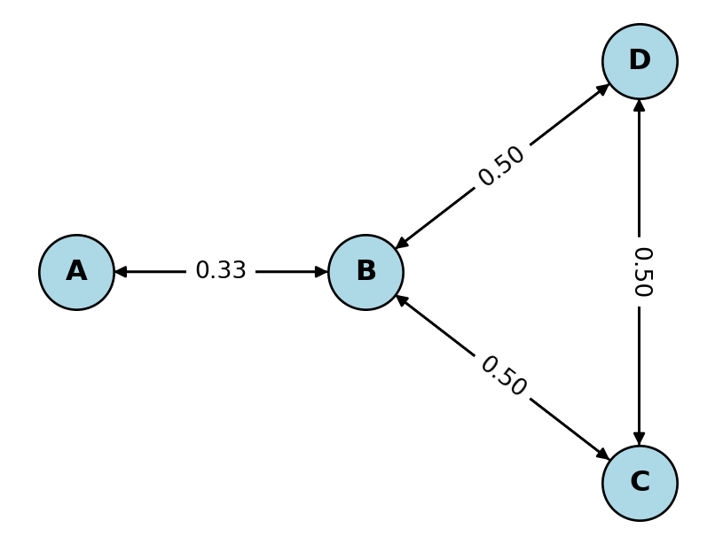
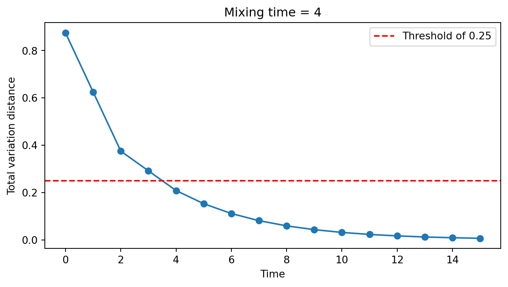
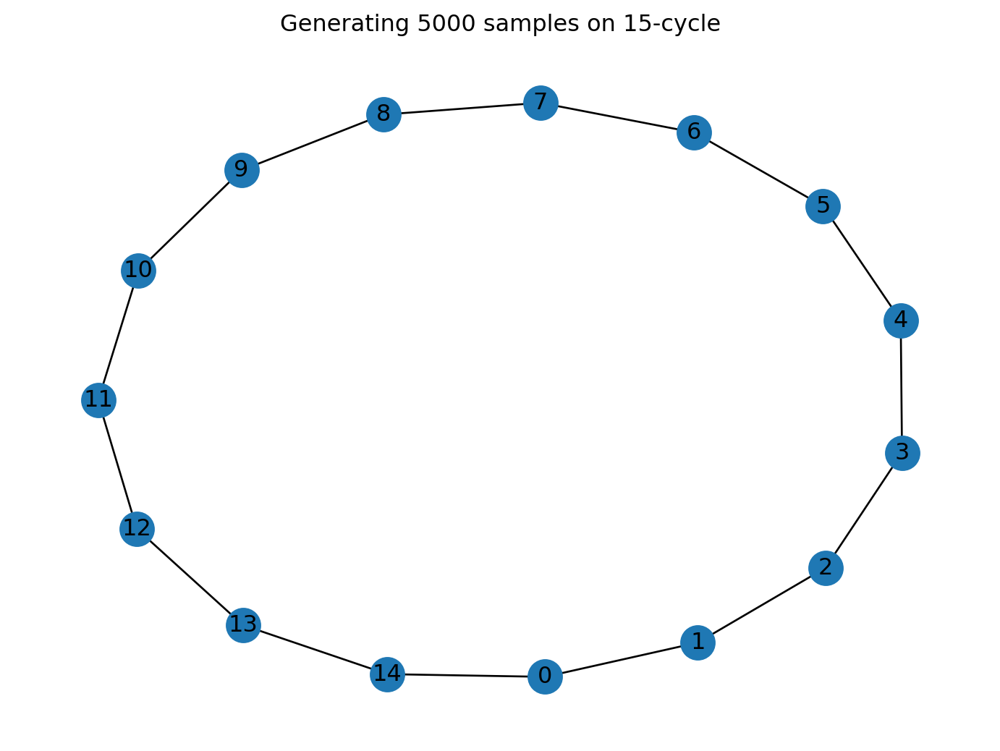
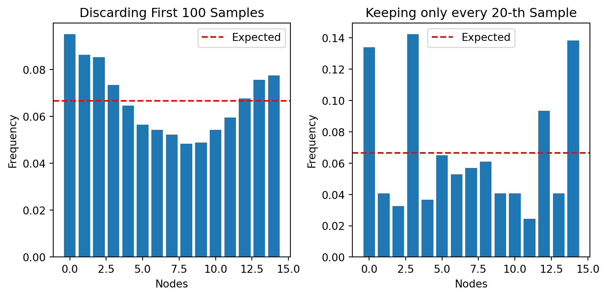
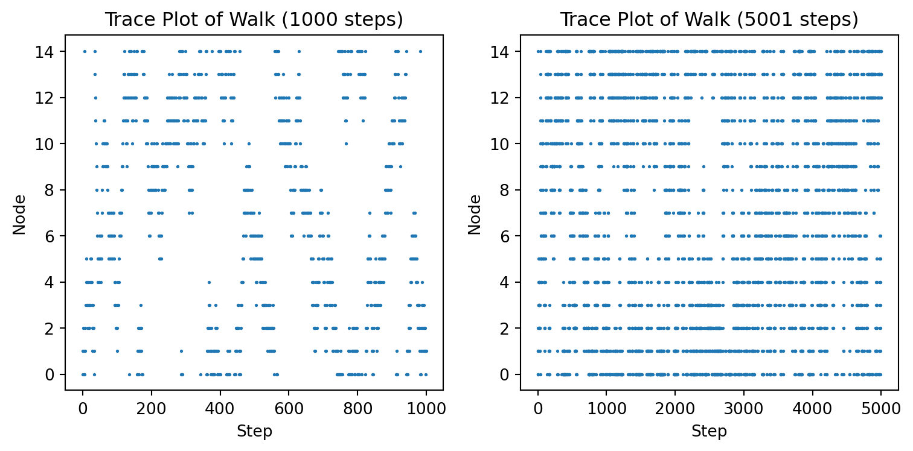
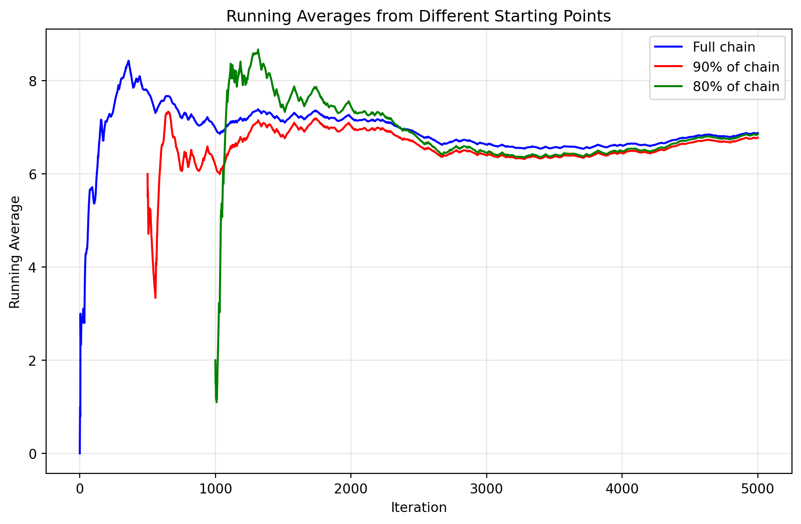
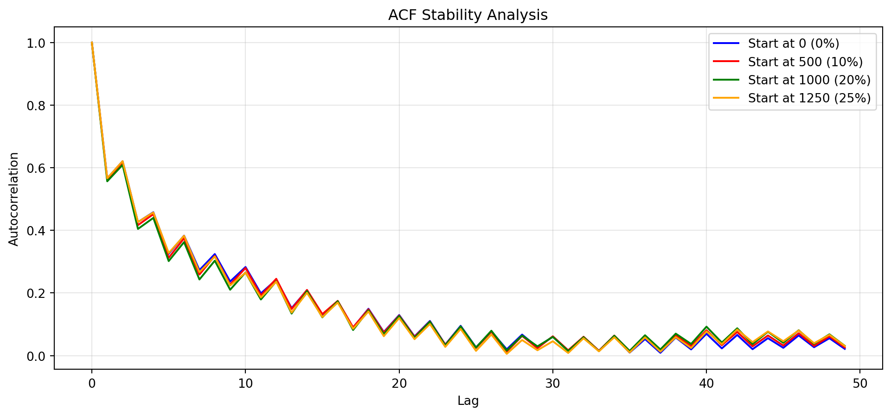

This appendix provides the theoretical foundation for MCMC methods covered in the main course. We will learn about Markov chains and focus on discrete chains for simplicity, but all results extend to the continuous case used in practice.
B.1 Definitions
A Markov chain is a discrete-time stochastic process that satisfies the Markov property. The Markov property states that the future state of the process depends only on the current state and not on the sequence of events that preceded it. In other words, the future is conditionally independent of the past given the present.
Definition B.1Markov Chain: A Markov chain is a sequence of random variables \(X_0, X_1, X_2, \ldots\) satisfying the following properties:
State Space: The random variables \(X_i\) take values in a finite set \(\Omega\) called the state space.
Markov Property: For all \(n \geq 0\) and all states \(i_0, i_1, \ldots, i_{n+1} \in \Omega\), \[P(X_{n+1} = i_{n+1} \mid X_0 = i_0, X_1 = i_1, \ldots, X_n = i_n) = P(X_{n+1} = i_{n+1} \mid X_n = i_n).\]
Time Homogeneity: The transition probabilities \(P(X_{n+1} = j \mid X_n = i)\) do not depend on \(n\).
The transition matrix of a Markov chain is a square matrix whose \((i, j)\)-th entry is the probability of transitioning from state \(i\) to state \(j\) in one time step.
Definition B.2Transition Matrix: Let \(X_1, X_2, X_3, \ldots\) be a Markov chain with state space \(\Omega = \{1, 2, \ldots, N\}\). The transition matrix \(P\) of the Markov chain is an \(N \times N\) matrix whose \((i, j)\)-th entry is given by \[P(i, j) = P(X_{n+1} = j \mid X_n = i).\]
Throughout this notebook, we’ll let \(X_0, X_1, X_2, \ldots\) be a Markov chain with state space \(\Omega = \{1, 2, \ldots, N\}\) and transition matrix \(P\).
TipState Diagrams
We can represent a Markov chain by a directed graph called a state diagram. Each state is represented by a node, and the transition probabilities are represented by directed edges between the nodes. The transition matrix can be derived from the state diagram by assigning the transition probabilities to the corresponding entries of the matrix.
The probability distribution of the Markov chain at time \(n\) is a row vector\(\pi_n\) whose \(i\)-th entry is \(\mathbb{P}(X_n = i)\) for each \(i \in \Omega\).
Theorem B.1 Let \(\pi_n\) be the probability distribution of the chain at time \(n\). Then, \[\pi_{n+1} = \pi_n P.\] And hence, \[\pi_n = \pi_0 P^n.\]
Example B.1 Consider a graph \(G\) with 4 vertices as shown below. The transition matrix of the random walk on \(G\) is given by \[P =
\begin{pmatrix}
0 & 1 & 0 & 0 \\
1/3 & 0 & 1/3 & 1/3 \\
0 & 1/2 & 0 & 1/2 \\
0 & 1/2 & 1/2 & 0
\end{pmatrix}.\]
Suppose we start at vertex \(A\). This means that the initial distribution is \(\pi_0 = [1, 0, 0, 0]\). The \(n\)-th distribution \(\pi_n\) can be obtained by multiplying \(\pi_0\) with the transition matrix \(P^n\).

Transition matrix of the Markov chain:
[[0. 1. 0. 0. ]
[0.33 0. 0.33 0.33]
[0. 0.5 0. 0.5 ]
[0. 0.5 0.5 0. ]]
Evolution of the Markov chain starting from state A:
A B C D
0 1.000 0.000 0.000 0.000
1 0.000 1.000 0.000 0.000
2 0.333 0.000 0.333 0.333
3 0.000 0.667 0.167 0.167
4 0.222 0.167 0.306 0.306
5 0.056 0.528 0.208 0.208
6 0.176 0.264 0.280 0.280
7 0.088 0.456 0.228 0.228
8 0.152 0.316 0.266 0.266
9 0.105 0.418 0.238 0.238
10 0.139 0.344 0.259 0.259
B.2 Stationary Distribution
Definition B.3 A probability distribution \(\pi\) is called a stationary distribution of a Markov chain with transition matrix \(P\) if \(\pi = \pi P\).
The transition matrix \(P\) is guaranteed to have an eigenvalue of 1 because its row sum is 1, i.e., \[P \vec{1} = \vec{1},\] where \(\vec{1}\) is the vector of all ones. Since there is a right eigenvector corresponding to the eigenvalue 1, there will be a left eigenvector as well. The left eigenvector is a stationary distribution of the Markov chain.
It is not hard to see that every eigenvalue of \(P\) is less than or equal to 1 in magnitude. Suppose \(\vec{v}\) is a left eigenvector of \(P\) corresponding to an eigenvalue \(\lambda\). Let \(v_I\) be the largest component of \(\vec{v}\) in magnitude. Then, we have \[\begin{align*}
\lambda \vec{v} &= \vec{v} P \\
\implies
\lambda v_I &= \sum_{j} v_j P(j, I) \\
&\leq \sum_{j} |v_j| P(j, I) \\
&\leq \sum_{j} |v_I| P(j, I) \\
&= |v_I|.
\end{align*}\]
Thus, \(|\lambda| \leq 1\). In particular, this means that the spectral radius of \(P\) is less than or equal to 1, and for all vectors \(\vec{v}\), we have \[\| \vec{v} \|_2 \geq \| \vec{v} P \|_2.\]
We are particularly interested in the case when there is exactly one eigenvector with eigenvalue of magnitude 1, which would then correspond to the stationary distribution of the Markov chain.
B.3 Fundamental Theorem
Definition B.4 We say that a Markov chain is irreducible if for every pair of states \(i, j \in \Omega\), there exists an integer \(n\) such that \(P^n(i, j) > 0\), i.e., it is possible to go from any state to any other state in a finite number of steps. This ensures that the dimension of the 1-eigenspace is 1.
Definition B.5 We say that a state \(i\) is aperiodic if the greatest common divisor of the set \(\{n \geq 1 : P^n(i, i) > 0\}\) is 1. A Markov chain is called aperiodic if all its states are aperiodic. This ensures that there are no other eigenvalues of norm 1.
Definition B.6 A Markov chain is called ergodic if it is irreducible and aperiodic.
Theorem B.2Fundamental Theorem of Markov Chains: If a Markov chain on a finite state space is ergodic, then it has a unique stationary distribution \(\Pi\). Moreover, in this case, for any initial distribution \(\pi_0\), the distribution of the chain converges to \(\Pi\) as \(n \to \infty\), i.e., \[\lim_{n \to \infty} \pi_0 P^n = \Pi\] for any initial distribution \(\pi_0\).
WarningInfinite State Spaces
For infinite state spaces, ergodicity (irreducibility + aperiodicity) alone is not sufficient. Additional conditions are required:
Positive recurrence: Every state must be positive recurrent, meaning the expected return time to any state \(i\) is finite: \(\mathbb{E}_i[T_i] < \infty\), where \(T_i = \inf\{n \geq 1 : X_n = i\}\).
In infinite state spaces, a chain can be irreducible and aperiodic but null recurrent (expected return time is infinite), in which case no stationary distribution exists.
Alternatively, the chain could be transient, meaning states are visited only finitely many times with positive probability.
B.4 Random Walk on Graphs
Our main example of a Markov chain is the random walk on a graph. Let \(G = (V, E)\) be a graph with vertex set \(V\) and edge set \(E\). Suppose you want to move from one vertex to another by following the edges of the graph. At each vertex, you choose an edge uniformly at random and move to the adjacent vertex. This process is called a random walk on the graph.
The random walk on \(G\) is a Markov chain with state space \(\Omega = V\) and transition probabilities given by \[P(i, j) =
\begin{cases}
\frac{1}{\deg(i)} & \text{if } (i, j) \in E, \\
0 & \text{otherwise},
\end{cases}\] where \(\deg(i)\) is the degree of vertex \(i\), i.e., the number of edges incident to \(i\).
NoteAlgorithm: Random Walk on a Graph
Given a graph \(G = (V, E)\) and starting vertex \(v_0 \in V\):
Set current vertex \(v = v_0\) and time \(t = 0\)
While \(t < T\) (for some stopping time \(T\)):
Let \(N(v) = \{u \in V : (v, u) \in E\}\) be the neighbors of \(v\)
Choose next vertex \(u\) uniformly at random from \(N(v)\)
Set \(v = u\) and \(t = t + 1\)
Record the current vertex \(v\)
In HW, you’ll prove the following theorem about ergodicity of random walks on graphs.
Theorem B.3 A random walk on a graph is
Irreducible if and only if the graph is connected.
Aperiodic if and only if the graph is not bipartite.
If these conditions hold, then the stationary distribution of the random walk is given by \[\Pi(i) = \frac{\deg(i)}{2|E|},\] where \(\deg(i)\) is the degree of vertex \(i\) and \(|E|\) is the number of edges in the graph.
B.5 Mixing Time
Assume that the Markov chain is ergodic, and hence has a stationary distribution \(\Pi\). We know that any initial distribution \(\pi_0\) converges to \(\Pi\) as \(n \to \infty\). The mixing time measures the rate of this convergence.
Definition B.7 The total variation distance between two probability distributions \(\mu\) and \(\nu\) on a finite state space \(\Omega\) is defined as \[\| \mu - \nu \|_{\text{TV}}
= \frac{1}{2} \sum_{i \in \Omega} |\mu(i) - \nu(i)|
= \frac{1}{2} \| \mu - \nu \|_{L^1}.\]
One can show that \[\| \mu - \nu \|_{\text{TV}} = \sup \{ |\mu(A) - \nu(A)| : A \subseteq \Omega \},\] i.e., \(\|\mu - \nu \|_{\text{TV}}\) is the maximum difference in the probability of any event under the two distributions.
We use the total variation distance to measure the distance between the distribution of the Markov chain at time \(n\) and the stationary distribution. The mixing time of the Markov chain is defined as the smallest \(N\) such that for the stationary distribution \(\Pi\) and any initial distribution \(\pi_0\), we have \[\| \pi_0 P^n - \Pi \|_{\text{TV}} \leq \frac{1}{4}\] for all \(n \geq N\). The constant \(\frac{1}{4}\) is arbitrary and can be replaced by any other constant in \((0, 1)\). This will only change the value of the mixing time by a constant factor and not the order of magnitude.
ImportantPractical Significance of Mixing Time
When using Markov chains for sampling, we want the mixing time to be as small as possible. This ensures that the distribution of the chain is close to the stationary distribution after a small number of steps. We think of the time before the chain mixes as a transient phase—the chain has not yet reached equilibrium. This is a burn-in period where we discard the samples. The bigger the mixing time, the more the number of wasted samples in the burn-in phase.
Example. Consider Example B.1 again. If we start at vertex \(A\), by step 4 we have already reached the distribution \(\pi_4 = [0.222, 0.167, 0.306, 0.306]\). The stationary distribution is \(\Pi = [1/8, 4/8, 2/8, 2/8]\). The total variation distance between \(\pi_4\) and \(\Pi\) is \(\| \pi_4 - \Pi \|_{\text{TV}} = 0.21\). This is less than \(1/4\), and hence the mixing time is at most 4 for this initial distribution.
This only computes the mixing time for the initial distribution \(\pi_0 = [1, 0, 0, 0]\). In general, we need to compute the mixing time for all possible initial distributions. The mixing time is the maximum of these mixing times over all initial distributions.
In practice, we either provide a theoretical bound on the mixing time or “visually” inspect the convergence of the chain to the stationary distribution. Running a simulation to compute the mixing time is computationally expensive and not commonly done.

B.5.1 Connection to Spectral Theory
Continuing the example from above, the matrix \(I_4 - P\) is called the normalized Laplacian matrix of the graph \(G\). \[\mathcal{L} = I_4 - P =
\begin{pmatrix}
1 & -1 & 0 & 0 \\
-1/3 & 1 & -1/3 & -1/3 \\
0 & -1/2 & 1 & -1/2 \\
0 & -1/2 & -1/2 & 1
\end{pmatrix}\]
One can show that 0 is an eigenvalue of \(\mathcal{L}\) and all eigenvalues are non-negative. The second smallest eigenvalue of \(\mathcal{L}\) is called the spectral gap of the graph (which could be 0).
TipSpectral Gap and Mixing Time
Spectral graph theory, in particular Cheeger inequalities, prove that there is an inverse relationship between the spectral gap of the graph and the mixing time of the random walk on the graph. The smaller the spectral gap, the larger the mixing time. You’ll explore this connection in the homework.
The app below computes \(\pi_t = \pi_0 P^t\) exactly, starting from all the mass on one vertex, and colors each vertex by \(\pi_t(i)\). On the right is \(\| \pi_t - \Pi \|_{\text{TV}}\) with the \(\tfrac{1}{4}\) threshold. Compare the complete graph, which mixes almost immediately, with the barbell and the chains of cliques, whose single-edge bottlenecks make the spectral gap tiny and the mixing time long. The app runs the lazy walk by default, which stays put with probability \(\tfrac{1}{2}\) at each step and otherwise moves like the simple walk. Uncheck it to see why: the path, the tree, the grid and the star are bipartite, so the simple walk is periodic and never mixes. Laziness fixes that at the cost of moving half as often.
VM =window.VM// vmTheme re-runs every cell that bakes a palette color into a trace when// the reader toggles dark mode; chartColors is that palette.vmTheme = Generators.observe(notify => VM.plotting.onThemeChange(notify))chartColors = VM.plotting.colors(vmTheme)
walkMaxTime =200walkThreshold =0.25walkDefaults = ({graph:"Barbell (bottleneck)",lazy:true,start:0,t:0})// The graphs, as {nodeCount, edges}. Built by hand rather than with a// graph library: each is a few lines of edges.walkGraphs = {const complete = (offset, size, edges) => {for (let i =0; i < size; i++) {for (let j = i +1; j < size; j++) edges.push([offset + i, offset + j]) } }const path = (nodeCount) => {const edges = []for (let i =0; i +1< nodeCount; i++) edges.push([i, i +1])return {nodeCount, edges} }const cycle = (nodeCount) => {const g =path(nodeCount) g.edges.push([nodeCount -1,0])return g }const completeGraph = (nodeCount) => {const edges = []complete(0, nodeCount, edges)return {nodeCount, edges} }const star = (leaves) => {const edges = []for (let i =1; i <= leaves; i++) edges.push([0, i])return {nodeCount: leaves +1, edges} }const grid = (rows, cols) => {const edges = []for (let r =0; r < rows; r++) {for (let c =0; c < cols; c++) {const i = r * cols + cif (c +1< cols) edges.push([i, i +1])if (r +1< rows) edges.push([i, i + cols]) } }return {nodeCount: rows * cols, edges} }const binaryTree = (depth) => {const nodeCount =Math.pow(2, depth +1) -1const edges = []for (let i =1; i < nodeCount; i++) edges.push([Math.floor((i -1) /2), i])return {nodeCount, edges} }// Two K_m joined through one middle vertex: m, m + 1, ..., 2m.const barbell = (m) => {const edges = []complete(0, m, edges)complete(m +1, m, edges) edges.push([m -1, m], [m, m +1])return {nodeCount:2* m +1, edges} }// K_m with a path of `tail` vertices hanging off it.const lollipop = (m, tail) => {const edges = []complete(0, m, edges)for (let i = m -1; i < m + tail -1; i++) edges.push([i, i +1])return {nodeCount: m + tail, edges} }// `count` copies of K_size, consecutive ones joined by a single edge// (and the last to the first when cyclic).const cliqueChain = (count, size, cyclic) => {const edges = []for (let k =0; k < count; k++) complete(k * size, size, edges)for (let k =0; k +1< count; k++) edges.push([(k +1) * size -1, (k +1) * size])if (cyclic) edges.push([count * size -1,0])return {nodeCount: count * size, edges} }returnnewMap([ ["Barbell (bottleneck)",barbell(8)], ["Complete graph (n = 15)",completeGraph(15)], ["Cycle (n = 21)",cycle(21)], ["Lollipop",lollipop(8,8)], ["3 cliques (2 bottlenecks)",cliqueChain(3,9,false)], ["3 cliques (3 bottlenecks, cyclic)",cliqueChain(3,9,true)], ["4 cliques (3 bottlenecks)",cliqueChain(4,9,false)], ["Path (n = 31)",path(31)], ["Binary tree (depth 4)",binaryTree(4)], ["Grid 5 × 5",grid(5,5)], ["Star (n = 15)",star(14)] ])}// One color per feature, none shared: the vertex scale runs purple ->// amber, and no other trace uses either hue.walkTraceOptions = ["Edges","Vertices","Start vertex","TV distance","Mixing time"]walkTraceColors =newMap([ ["Edges", chartColors.muted], ["Vertices", chartColors.accent2], ["Start vertex", chartColors.ink], ["TV distance", chartColors.fn], ["Mixing time", chartColors.ok]])
// A choice, not a slider: the vertices are labels, and neighbouring// numbers aren't neighbouring vertices. The start vertex has a thick// dark ring in the picture. Rebuilt when the graph changes (its vertex count// does), keeping the URL's vertex when the new graph has it.viewof walkStart = {// Read from walkGraphs, not walkGraph, so toggling the lazy walk// doesn't rebuild this and lose the reader's choice.const nodeCount = walkGraphs.get(walkGraphName).nodeCountconst vertices = []for (let i =0; i < nodeCount; i++) vertices.push(i)const wanted =Math.round(VM.ui.urlParam("walk_start", walkDefaults.start))let initial =0if (wanted >=0&& wanted < nodeCount) initial = wantedreturn Inputs.select(vertices, {label:"Start vertex",value: initial})}
// Everything that depends on the graph alone: layout, transition matrix,// stationary distribution and spectrum. Rerun only when the graph or the// lazy toggle changes, not on every time step.walkGraph = {const g = walkGraphs.get(walkGraphName)const {P, degrees, stationary} = VM.discreteMath.randomWalkMatrix(g.nodeCount, g.edges, {lazy: walkLazy})const positions = VM.discreteMath.springLayout(g.nodeCount, g.edges, {seed:42,iterations:400})// P = D^-1 A is not symmetric, but D^(1/2) P D^(-1/2) is, and has the// same eigenvalues -- which is what lets a symmetric solver find them.const S = []for (let i =0; i < g.nodeCount; i++) {const row = []for (let j =0; j < g.nodeCount; j++) row.push(Math.sqrt(degrees[i] / degrees[j]) * P[i][j]) S.push(row) }const eigenvalues = VM.numerical.symmetricEigenvalues(S)return {...g, P, stationary, positions, eigenvalues}}
// pi_t for t = 0..walkMaxTime from the chosen start, with its distance to// stationarity at every step.walkRun = {const p0 =newArray(walkGraph.nodeCount).fill(0) p0[walkStart] =1const distributions = VM.mcmc.evolveDistribution(walkGraph.P, p0, walkMaxTime)const tv = []for (const p of distributions) tv.push(VM.mcmc.totalVariation(p, walkGraph.stationary))// First time the distance drops to the threshold and stays there.let mixingTime =nullfor (let t = walkMaxTime; t >=0; t--) {if (tv[t] > walkThreshold) break mixingTime = t }return {distributions, tv, mixingTime}}
{const ev = walkGraph.eigenvalueslet mixingText =`> ${walkMaxTime}`if (walkRun.mixingTime!==null) mixingText =String(walkRun.mixingTime)return VM.ui.statRow([ {label:"Vertices",value: walkGraph.nodeCount}, {label:`TV at t = ${walkT}`,value: walkRun.tv[walkT].toFixed(4)}, {label:"Mixing time",value: mixingText,title:"First step after which the TV distance stays ≤ ¼, from this start vertex"}, {label:"Spectral gap 1 − λ₂",value: (1- ev[1]).toFixed(4),title:"λ₂: second-largest eigenvalue of P"}, {label:"Smallest eigenvalue",value: ev[ev.length-1].toFixed(4),title:"−1 exactly when the walk is periodic (bipartite graph, not lazy)"} ])}
walkPlot = VM.plotting.persistentPlot()
walkShow =newSet(walkTraces)
{const pos = walkGraph.positionsconst probs = walkRun.distributions[walkT]let maxStationary =0for (const p of walkGraph.stationary) maxStationary =Math.max(maxStationary, p)// A fixed color scale per graph: saturates at 3x the largest stationary// mass, so a start vertex glows early on and the colors settle to a// steady pattern -- proportional to degree -- as the walk mixes.const cmax =Math.min(1,3* maxStationary)const edgeX = [], edgeY = []for (const [u, v] of walkGraph.edges) { edgeX.push(pos[u][0], pos[v][0],null) edgeY.push(pos[u][1], pos[v][1],null) }const nodeX = [], nodeY = [], labels = [], lineColors = [], lineWidths = []for (let i =0; i < walkGraph.nodeCount; i++) { nodeX.push(pos[i][0]) nodeY.push(pos[i][1]) labels.push(String(i))// A thick dark ring marks the start; every other vertex gets a thin// light one, so the ring stands out at any fill color on the scale.if (i === walkStart && walkShow.has("Start vertex")) { lineColors.push(chartColors.ink) lineWidths.push(4) } else { lineColors.push(chartColors.halo) lineWidths.push(1) } }const steps = []for (let t =0; t <= walkMaxTime; t++) steps.push(t)const data = []if (walkShow.has("Edges")) { data.push({x: edgeX,y: edgeY,type:"scatter",mode:"lines",name:"Edges",showlegend:false,line: {color: VM.plotting.alpha("muted",0.7),width:1.2},hoverinfo:"skip"}) }if (walkShow.has("Vertices")) { data.push({x: nodeX,y: nodeY,type:"scatter",mode:"markers",name:"Vertices",showlegend:false,text: labels,customdata: probs,marker: {size: walkGraph.nodeCount<=20?20:14,color: probs,cmin:0, cmax,// Two opposite hues, purple (no mass) to amber (the most), rather// than white to blue, whose pale end was hard to tell apart.colorscale: [[0, chartColors.accent2], [1, chartColors.warn]],line: {color: lineColors,width: lineWidths},colorbar: {title: {text:"π<sub>t</sub>(i)",side:"top"},orientation:"h",x:0.25,xanchor:"center",y:-0.02,yanchor:"top",len:0.4,thickness:10,outlinewidth:0} },hovertemplate:"vertex %{text}<br>π<sub>t</sub> = %{customdata:.4f}<extra></extra>"}) }if (walkShow.has("TV distance")) { data.push({x: steps,y: walkRun.tv,type:"scatter",mode:"lines",name:"TV distance",showlegend:false,xaxis:"x2",yaxis:"y2",line: {color: chartColors.fn,width:2},hovertemplate:"t = %{x}<br>TV = %{y:.4f}<extra></extra>"}) data.push({x: [walkT],y: [walkRun.tv[walkT]],type:"scatter",mode:"markers",name:"now",showlegend:false,xaxis:"x2",yaxis:"y2",marker: {color: chartColors.fn,size:11,line: {color: chartColors.halo,width:2}},hoverinfo:"skip"}) } data.push({x: [0, walkMaxTime],y: [walkThreshold, walkThreshold],type:"scatter",mode:"lines",name:"threshold ¼",showlegend:false,xaxis:"x2",yaxis:"y2",line: {color: chartColors.muted,width:1.5,dash:"dash"},hoverinfo:"skip"})if (walkShow.has("Mixing time") && walkRun.mixingTime!==null) { data.push({x: [walkRun.mixingTime, walkRun.mixingTime],y: [0,1],type:"scatter",mode:"lines",name:"Mixing time",showlegend:false,xaxis:"x2",yaxis:"y2",line: {color: chartColors.ok,width:1.5,dash:"dot"},hovertemplate:`mixing time ${walkRun.mixingTime}<extra></extra>`}) }// The TV panel's axes copy mathviz's axis chrome (it themes only the// first x/y pair); this cell re-runs on a theme toggle through chartColors.const themed = VM.plotting.layout()returnwalkPlot(data, {xaxis: {domain: [0,0.5],range: [-1.15,1.15],visible:false},yaxis: {domain: [0,1],range: [-1.15,1.15],visible:false,scaleanchor:"x"},xaxis2: {...themed.xaxis,domain: [0.62,1],range: [0, walkMaxTime],title: {...themed.xaxis.title,text:"step t"},anchor:"y2"},yaxis2: {...themed.yaxis,domain: [0.1,0.9],range: [0,1.02],title: {...themed.yaxis.title,text:"‖π<sub>t</sub> − Π‖<sub>TV</sub>"},anchor:"x2"},hovermode:"closest",uirevision: walkGraphName,autosize:true })}
The eigenvalues of \(P\) for the graph above, largest first. \(\lambda_1 = 1\) always; the gap between it and \(\lambda_2\) controls how fast the walk mixes, and an eigenvalue at \(-1\) means the walk is periodic.
{const ev = walkGraph.eigenvaluesconst index = [], colors = []for (let i =0; i < ev.length; i++) { index.push(i +1)if (i ===1) { colors.push(chartColors.alt) } else { colors.push(chartColors.fn) } }returnwalkSpectrumPlot([ {x: index,y: ev,type:"bar",name:"eigenvalue",marker: {color: colors},hovertemplate:"λ<sub>%{x}</sub> = %{y:.4f}<extra></extra>"} ], {xaxis: {title:"index",dtick:5},yaxis: {title:"eigenvalue λ",range: [-1.05,1.05]},showlegend:false,uirevision: walkGraphName })}
B.6 Sampling from a Markov Chain
The algorithm to generate sample paths of length \(n\) of a Markov chain is simple. Suppose \(P\) is the transition matrix of the Markov chain with mixing time \(t\).
NoteAlgorithm: Markov Chain Sampling
Given a transition matrix \(P\) and desired number of samples \(N\):
Start at some initial state \(X_0\)
For \(i = 0, 1, \ldots, N-1\):
Generate \(X_{i+1} \sim P(X_i, \cdot)\)
Discard the first \(T\) samples and return \(X_{T+1}, X_{T+2}, \ldots, X_N\)
We can interpret this algorithm as generating \(N-T\) samples from the stationary distribution of the Markov chain. The number of samples discarded is called the burn-in period.
One big issue with this algorithm is that the samples are highly correlated. If independence is important, selecting every \(k\)-th sample may be beneficial. However, this leads to a lot of wasted samples and it might not get rid of all the correlation. In practice, it is better to generate a large number of samples than to “thin” the samples.
Example B.2 In the example below we generate a uniform distribution over \(\{0, 1, \ldots, 14\}\) by generating a random walk over a cycle of length 15.
The autocorrelation plot below shows the correlation between samples at different lags, i.e., \(X_i\) and \(X_{i+k}\) for different values of \(k\). We can see that the correlation decreases as \(k\) increases and stabilizes around \(k = 40\).
We can either discard the first 40 samples or select every 40th sample to reduce the correlation. If independence is important, then we should select every 40th sample. However, this leads to a lot of wasted samples and it might not get rid of all the correlation. This method is not preferred in practice. In practice, it is better to generate a large number of samples than to “thin” the samples.


B.7 Reversible Markov Chains
A Markov chain is reversible with respect to a distribution \(\pi\) if the following holds: \[\pi_i P(i, j) = \pi_j P(j, i) \quad \text{for all } i, j. \tag{B.1}\]
This is saying that the probability of transitioning from \(x\) to \(y\) is the same as the probability of transitioning from \(y\) to \(x\). Equation B.1 is known as the detailed balance equation.
Theorem B.4(Detailed Balance Equation). If a Markov chain is reversible with respect to a distribution \(\pi\), then \(\pi\) is a stationary distribution of the Markov chain.
Proof. Suppose the Markov chain is reversible with respect to \(\pi\). Then, \[\begin{aligned}
(\pi P)_i &= \sum_j \pi_j P(j, i) \\
&= \sum_j \pi_i P(i, j) \\
&= \pi_i \sum_j P(i, j) \\
&= \pi_i.
\end{aligned}\] Thus, \(\pi\) is the stationary distribution of the Markov chain.
Equation B.1 is a sufficient but not necessary condition for \(\pi\) to be the stationary distribution of the Markov chain. You can have a Markov chain with a stationary distribution that is not reversible.
Note that we did not use any properties of the Markov chain in the proof of the theorem, except that the row sum of the transition matrix is \(1\). A better way to phrase this theorem would be to say that “if the row sum of the transition matrix is \(1\) and the detailed balance equation holds, then \(\pi\) is an eigenvector of the transition matrix with eigenvalue \(1\).”
Example B.3Random Walks on Graphs. Consider a graph \(G = (V, E)\) with vertices \(V\) and edges \(E\). Let \(P(i, j) = 1/\deg(i)\) if \((i, j) \in E\) and \(0\) otherwise, where \(\deg(i)\) is the degree of vertex \(i\). Then, the stationary distribution of the Markov chain is \(\pi_i = \deg(i)/(2|E|)\), where \(|E|\) is the number of edges in the graph.
The Markov chain is reversible with respect to \(\pi\). Consider two vertices \(i\) and \(j\). If \((i, j) \in E\), then \[\begin{aligned}
\pi_i P(i, j) &= \frac{\deg(i)}{2|E|} \cdot \frac{1}{\deg(i)} \\
&= \frac{1}{2|E|} \\
&= \frac{\deg(j)}{2|E|} \cdot \frac{1}{\deg(j)} \\
&= \pi_j P(j, i).
\end{aligned}\] If \((i, j) \notin E\), then \(\pi_i P(i, j) = \pi_j P(j, i) = 0\).
Many Markov chains encountered in practice are reversible with respect to some distribution. It is much easier to check the detailed balance equation than to compute the stationary distribution directly. Moreover, reversible Markov chains can be analyzed using spectral methods and we can find good bounds on their mixing time.
B.7.1 Reversibility and Symmetry
Theorem B.5 If a Markov chain is reversible with respect to a distribution \(\pi\), then the matrix \[Q = \text{diag}(\sqrt{\pi}) \: P \: \text{diag}(\sqrt{\pi^{-1}})\] is symmetric. In particular, \(P\) is similar to the symmetric matrix \(Q\) and hence has real eigenvalues.
Proof. This is because \[\begin{aligned}
Q(i, j)
&= \sqrt{\pi_i} P(i, j) \sqrt{\pi_j^{-1}} \\
&= \sqrt{\pi_i} \frac{\pi_j P(j, i)}{\pi_i} \sqrt{\pi_j^{-1}} \\
&= \sqrt{\pi_j} P(j, i) \sqrt{\pi_i^{-1}} \\
&= Q(j, i).
\end{aligned}\] Thus, \(Q\) is symmetric.
Now suppose \(\mathbf{v}\) is a left eigenvector of \(Q\) with eigenvalue \(\lambda\). Then, \[\begin{aligned}
\mathbf{v} Q &= \lambda \mathbf{v} \\
\mathbf{v} \text{diag}(\sqrt{\pi}) \: P \: \text{diag}(\sqrt{\pi^{-1}}) &= \lambda \mathbf{v} \\
\implies \mathbf{v} \text{diag}(\sqrt{\pi}) \: P &= \lambda \mathbf{v} \: \text{diag}(\sqrt{\pi}).
\end{aligned}\]
Hence, \(\mathbf{v} \text{diag}(\sqrt{\pi})\) will be an eigenvector of \(P\) with the same eigenvalue. As \(Q\) is symmetric, it has real eigenvalues and orthogonal eigenvectors. It is easier to do spectral analysis of \(Q\) and use that to deduce properties of \(P\). For example, we can find the eigenvector corresponding to the largest eigenvalue of \(Q\) by solving the optimization problem \[\mathbf{v} = \underset{\mathbf{x} \neq 0}{\text{arg max}} \frac{\mathbf{x}^T Q \mathbf{x}}{\mathbf{x}^T \mathbf{x}}.\]
Multiplying the above vector \(\mathbf{v}\) by \(\text{diag}(\sqrt{\pi})\) gives us the stationary distribution for \(P\).
B.8 Transition Kernels
The sample spaces we encounter in MCMC methods are not discrete but continuous. Instead of a transition matrix, we use a transition kernel\(K(x, y)\) that gives the “probability density for transitioning from state \(x\) to state \(y\)”. The transition kernel satisfies the equation: \[\mathbb{P}(X_{n+1} \in A \mid X_n = x) = \int_{A} K(x, y) \, dy.\]
All the properties of Markov chains that we discussed earlier can be extended to transition kernels, but the definitions become more technical. The fundamental theorem of Markov chains becomes:
Theorem B.6(Fundamental Theorem of Markov Chains for Kernels). If a Markov chain with transition kernel \(K\) is
\(\phi\)-Irreducible: There exists a measure \(\phi\) such that for all sets \(A\) with \(\phi(A) > 0\) and all \(x\), there exists \(n\) such that \(\mathbb{P}(X_n \in A \mid X_0 = x) > 0\).
Positive Harris recurrent: The chain returns to every set of positive \(\phi\)-measure with probability 1 and the expected return time is finite.
Aperiodic: The chain is not confined to a periodic structure (often verified by showing that for some set with positive measure, return times have GCD equal to 1, or by establishing a minorization condition).
Then, the Markov chain has a unique stationary distribution \(\Pi\) and for all initial distributions \(\pi_0\), \[\|\pi_0 K^n - \Pi\|_{TV} \to 0 \quad \text{as } n \to \infty,\] where \(\|\cdot\|_{TV}\) denotes the total variation distance.
NotePractical Verification
In practice, these conditions can be difficult to verify directly. For MCMC algorithms, aperiodicity is often ensured by design (e.g., having positive probability of staying in place), and irreducibility/positive recurrence are verified through properties of the target distribution and the proposal mechanism.
B.9 Central Limit Theorem for Markov Chains
A primary motivation for MCMC methods is to estimate expectations of the form \(\mathbb{E}_\Pi[g(X)]\) for some function \(g: \Omega \to \mathbb{R}\), where \(\Pi\) is the stationary distribution. For example, we might want to compute the mean, variance, or higher moments of the stationary distribution.
B.9.1 Sample Mean Estimator
Given a Markov chain \(X_0, X_1, \ldots, X_n\) with stationary distribution \(\Pi\), the sample mean estimator for \(\mathbb{E}_\Pi[g(X)]\) is \[\bar{g}_n = \frac{1}{n} \sum_{i=1}^{n} g(X_i).\]
By the ergodic theorem for Markov chains, if the chain is ergodic, then \(\bar{g}_n \to \mathbb{E}_\Pi[g(X)]\) almost surely as \(n \to \infty\). However, for practical purposes, we need to understand the rate of convergence and quantify the uncertainty in our estimate.
B.9.2 Variance of the Sample Mean
To analyze the quality of our estimator, we compute its variance. Assuming the chain has reached stationarity (i.e., \(X_i \sim \Pi\) for all \(i\)), we have: \[\text{Var}(\bar{g}_n) = \text{Var}\left(\frac{1}{n} \sum_{i=1}^{n} g(X_i)\right) = \frac{1}{n^2} \sum_{i=1}^{n} \sum_{j=1}^{n} \text{Cov}(g(X_i), g(X_j)).\]
Unlike independent samples, Markov chain samples are correlated. Splitting the sum into diagonal and off-diagonal terms: \[\text{Var}(\bar{g}_n) = \frac{1}{n^2} \left[ \sum_{i=1}^{n} \text{Var}(g(X_i)) + 2\sum_{i=1}^{n} \sum_{j > i} \text{Cov}(g(X_i), g(X_j)) \right].\]
By stationarity, \(\text{Var}(g(X_i)) = \sigma_g^2\) for all \(i\), and \(\text{Cov}(g(X_i), g(X_j))\) depends only on \(|j - i|\). Let \(\gamma_k = \text{Cov}(g(X_0), g(X_k))\) denote the lag-\(k\) autocovariance. Then: \[\text{Var}(\bar{g}_n) = \frac{\sigma_g^2}{n} + \frac{2}{n^2} \sum_{k=1}^{n-1} (n-k) \gamma_k.\]
For large \(n\), this simplifies to: \[\text{Var}(\bar{g}_n) \approx \frac{1}{n} \left( \sigma_g^2 + 2\sum_{k=1}^{\infty} \gamma_k \right) = \frac{\sigma_{\text{asy}}^2}{n},\]
where \(\sigma_{\text{asy}}^2 = \sigma_g^2 + 2\sum_{k=1}^{\infty} \gamma_k\) is called the asymptotic variance.
B.9.3 Geometric Ergodicity
For the variance of the sample mean to decrease as \(O(1/n)\), we need the sum \(\sum_{k=1}^{\infty} \gamma_k\) to converge. This requires the autocovariances to decay sufficiently fast.
Definition B.8 A Markov chain with stationary distribution \(\Pi\) is called geometrically ergodic if there exist constants \(C > 0\) and \(\rho \in (0, 1)\) such that for all initial states \(x\): \[\| \mathbb{P}(X_n \in \cdot \mid X_0 = x) - \Pi(\cdot) \|_{\text{TV}} \leq C(x) \rho^n,\]
where \(C(x)\) may depend on the initial state \(x\).
Geometric ergodicity implies that the chain converges to its stationary distribution at an exponential rate. This condition is stronger than ordinary ergodicity and has important consequences for estimation.
TipGeometric Ergodicity and Covariance Decay
If a Markov chain is geometrically ergodic, then the autocovariances \(\gamma_k\) decay exponentially fast: \(|\gamma_k| \leq C' \rho^k\) for some constants \(C'\) and \(\rho \in (0, 1)\). This ensures that \(\sum_{k=1}^{\infty} |\gamma_k| < \infty\), so the asymptotic variance \(\sigma_{\text{asy}}^2\) is finite.
B.9.4 Central Limit Theorem
Under geometric ergodicity, we have a central limit theorem analogous to the CLT for independent samples:
Theorem B.7(CLT for Geometrically Ergodic Chains). Let \(X_0, X_1, \ldots\) be a geometrically ergodic Markov chain with stationary distribution \(\Pi\). Let \(g: \Omega \to \mathbb{R}\) be a function with \(\mathbb{E}_\Pi[g(X)^2] < \infty\). Then: \[\sqrt{n}\left(\bar{g}_n - \mathbb{E}_\Pi[g(X)]\right) \xrightarrow{d} \mathcal{N}(0, \sigma_{\text{asy}}^2),\]
where \(\sigma_{\text{asy}}^2 = \sigma_g^2 + 2\sum_{k=1}^{\infty} \gamma_k\) is the asymptotic variance.
This theorem tells us that even though MCMC samples are correlated, the sample mean is still asymptotically normal. The key difference from independent sampling is that the variance is inflated by the factor \[\tau = \frac{\sigma_{\text{asy}}^2}{\sigma_g^2} = 1 + 2\sum_{k=1}^{\infty} \frac{\gamma_k}{\sigma_g^2},\]
which is called the integrated autocorrelation time. To achieve the same precision as \(n\) independent samples, we need approximately \(n \cdot \tau\) MCMC samples.
ImportantPractical Implications
Effective Sample Size (ESS): The effective sample size is \(n_{\text{eff}} = n / \tau\), representing the equivalent number of independent samples.
Confidence Intervals: Standard errors for MCMC estimates should use \(\sigma_{\text{asy}}/\sqrt{n}\) rather than \(\sigma_g/\sqrt{n}\).
Chain Design: Algorithms that mix faster (smaller \(\tau\)) produce more efficient estimates.
B.10 Analyzing Convergence of Markov Chains
WarningChapter Under Revision
This chapter is currently being rewritten and may contain incomplete or outdated content. Please see lecture notes.
In practice we need to decide how many samples to burn and how many samples to generate. We use various heuristics to decide this.
NoteAlgorithm: Trace Plot Analysis
To assess convergence of a Markov chain:
Generate a long chain of samples \(X_1, X_2, \ldots, X_N\)
Plot the sequence of samples against time
Look for:
Stabilization around a central value
Absence of trends or drifts
Consistent variability across the chain
If the chain appears to have converged, determine burn-in period
B.10.1 Trace Plots
A trace plot is simply a scatter plot of the samples generated by the Markov chain. It is useful to see if the Markov chain has converged. If the Markov chain has converged, the trace plot should look like a cloud of points. If the Markov chain has not converged, the trace plot will show a trend.
Below are the trace plots for Example B.2. We can see that the chain does not look uniform even after 1000 samples but after 5000 samples it is starting to look uniform.

B.10.2 Running Average
The running average (also called cumulative mean) is the average of the first \(n\) samples: \[\bar{x}_n = \frac{1}{n}\sum_{i=1}^n x_i\]
Running averages are a simple diagnostic tool for assessing MCMC convergence. If a chain has converged, the running average should stabilize around the true mean, with consistent behavior across different starting points.
WarningImportant Limitations of Running Averages
Running averages have critical limitations:
False stability: Can appear stable even when the chain hasn’t converged.
Slow detection: Respond slowly to changes due to their cumulative nature.
Masking effect: Early samples heavily influence the average, hiding later issues.
Limited scope: Don’t reveal whether the chain explores the full distribution.
Key insight: Running averages are better at detecting non-convergence than confirming convergence. Always use alongside other diagnostics.
B.10.2.1 Effective Usage Strategy
Signs of convergence:
Running averages from different starting points converge to similar values.
Stabilization occurs consistently regardless of where you start.
Absence of persistent trends or sudden jumps.
Signs of problems:
Persistent drift or trending behavior.
Different stabilization points from different starting points.
Large jumps indicating the chain is moving between regions.
Use running averages as supporting evidence for your autocorrelation-based burn-in determination, not as the primary diagnostic.
Below is the running average analysis for Example B.2.

Final running average (full chain): 6.880
Average of last 80% of chain: 6.854
Difference: 0.026
B.10.3 Autocorrelation Function
One method for finding the burn-in period is to use the autocorrelation function. The autocorrelation function of a sequence of numbers \(x = (x_0, x_1, \ldots, x_n)\) at lag \(k\) is defined as \[\text{ACF}(k) = \text{Corr}(x[k:], x[:-k])\] where by \(x[k:]\) we mean the subsequence \(x_k, x_{k+1}, \ldots, x_n\) and by \(x[:-k]\) we mean the subsequence \(x_0, x_1, \ldots, x_{n-k}\). It is the correlation between the sequence \(x\) and the same sequence shifted by \(k\).
The key insight for using autocorrelation to determine burn-in is that once a Markov chain converges to its stationary distribution, the autocorrelation pattern becomes stable and translation-invariant. This means the autocorrelation function should look the same regardless of which part of the converged chain you analyze.
A common mistake is to burn-in samples simply where autocorrelation is high. This is incorrect because:
High autocorrelation indicates slow mixing, not lack of convergence.
A chain can be perfectly converged but still have high autocorrelation.
This approach may discard valid samples from the target distribution.
The correct approach focuses on autocorrelation stability, not autocorrelation magnitude.
NoteAlgorithm: Choosing Burn-in Period Using ACF Stability
To determine the burn-in period using autocorrelation stability:
Select candidate burn-in points: Choose several potential burn-in locations (e.g., 10%, 20%, 25%, 33% of chain length).
Calculate ACF for each candidate: For each candidate burn-in point \(s\), compute the autocorrelation function \(\text{ACF}_s(k)\) using only the chain from iteration \(s\) onward.
Compare ACF patterns: For consecutive candidates \(s_1 < s_2\), calculate the similarity: \[\text{Similarity} = \frac{1}{K}\sum_{k=1}^{K} |\text{ACF}_{s_1}(k) - \text{ACF}_{s_2}(k)|\] where \(K\) is the maximum lag considered.
Find convergence point: The burn-in period ends at the first \(s\) where the similarity falls below a threshold \(\epsilon\) (e.g., \(\epsilon = 0.05\)).
Apply safety margin: Double the detected burn-in period to be conservative.
TipInterpreting Autocorrelation Results
High but stable autocorrelation: Chain has converged but mixes slowly. Solution: run longer chains or improve the sampler, not longer burn-in.
Low but changing autocorrelation: Chain may not have converged yet. The autocorrelation pattern is still evolving.
Stable autocorrelation pattern: Indicates convergence, regardless of whether the values are high or low.
From this analysis, we can see whether the autocorrelation patterns are similar across different starting points. If they are, the chain has likely converged by the earliest point where this stability is observed. This approach is more principled than simply thresholding autocorrelation values, as it’s based on the fundamental property that converged Markov chains have time-invariant statistical properties.
Example B.4 Below is the autocorrelation analysis for Example B.2. Rather than simply looking for where autocorrelation drops below a threshold, we examine whether the autocorrelation pattern has stabilized across different portions of the chain.

Similarity analysis:
Burn-in 0 vs 500: similarity = 0.005
Burn-in 500 vs 1000: similarity = 0.007
Burn-in 1000 vs 1250: similarity = 0.008
Based on visual inspection and similarity analysis, no burn-in is required.
B.11 Concluding Remarks
In this module, we have established the foundational theory of Markov chains that underpins modern Monte Carlo methods. The key insights we have developed include:
Theoretical Foundations: We have seen how the Markov property leads to a rich mathematical structure, where the long-term behavior of the chain is determined by the spectral properties of the transition matrix. The fundamental theorem guarantees convergence to a unique stationary distribution under ergodicity conditions, providing the theoretical justification for using Markov chains as sampling algorithms.
Practical Considerations: The gap between theory and practice is bridged by understanding mixing times and convergence diagnostics. While theoretical convergence is guaranteed, practical implementation requires careful attention to burn-in periods, autocorrelation, and the trade-offs between computational efficiency and sample quality.
Spectral Connections: The connection between reversibility and spectral theory provides powerful tools for analysis. Reversible chains, which satisfy detailed balance, can be analyzed using symmetric matrix theory, leading to better bounds on mixing times and deeper understanding of convergence rates.
Limitations and Challenges: Despite their theoretical elegance, Markov chains face practical challenges. High-dimensional problems often suffer from slow mixing, and convergence diagnostics can be misleading. The autocorrelation function and trace plots provide useful heuristics, but they cannot guarantee convergence—they are better at detecting non-convergence than confirming convergence.
ImportantLooking Ahead
The theory developed here forms the backbone for advanced MCMC algorithms such as Metropolis-Hastings, Gibbs sampling, and Hamiltonian Monte Carlo. Each of these methods constructs specific transition kernels designed to have desired stationary distributions while maintaining good mixing properties. Understanding the fundamental principles of Markov chain theory is essential for both implementing these algorithms correctly and diagnosing their performance in practice.